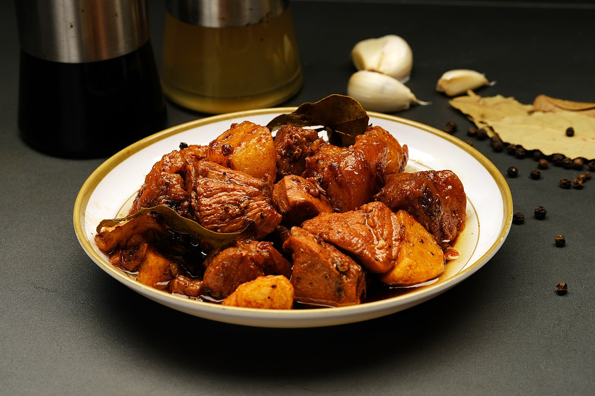

Adobo

Description
Philippine adobo (from Spanish adobar: "marinade," "sauce" or "seasoning" / English: /əˈdoʊboʊ/ Tagalog pronunciation: [ɐdobo]) is a popular Filipino dish and cooking process in Philippine cuisine of, in its base form, meat, seafood, or vegetables first browned in oil, and then marinated and simmered vinegar, salt and/or soy sauce, and garlic. It has occasionally been considered the unofficial national dish in the Philippines.
Ingredients
- 2 pound pork belly, cut into 2-inch cubes
- 1 onion, peeled and sliced thinly
- 1 head garlic, peeled and minced
- 2 bay leaves
- 1 teaspoon salt
- 1/2 teaspoon pepper
- 1 table spoon oil
- 1 cup vinegar
- 1/2 cup soy sauce
- 1 cup water
Steps
- In a bowl, combine pork, onions, garlic, bay leaves, salt, and pepper. Place in the refrigerator and marinate for about 30 minutes.
- In a wide, heavy bottom skillet over medium heat, heat oil. Add meat mixture and cook, turning occasionally, until pork is lightly brown.
- Add vinegar and allow to boil, uncovered and without stirring, for about 3 to 5 minutes.
- Add soy sauce and water and stir to combine. Allow to boil for another 3 to 5 minutes.
- Lower heat, cover, and simmer for about 40 to 50 minutes or until meat is fork-tender and sauce is reduced.
- Season with salt and pepper. Serve hot
Nutrition Information
- Calories: 747kcal
- Carbohydrates: 26g
- Protein: 41g
Fat: 54g
- Saturated Fat: 17g
- Polyunsaturated Fat: 9g
- Monounsaturated Fat: 19g
- Trans Fat: 1g
- Cholesterol: 181mg
- Sodium: 1077mg
- Potassium: 1813mg
- Fiber: 9g
- Sugar: 16g
- Vitamin A: 9953IU
- Vitamin C: 129mg
- Calcium: 326mg
- Iron: 5mg
Source: kawalingpinoy.com